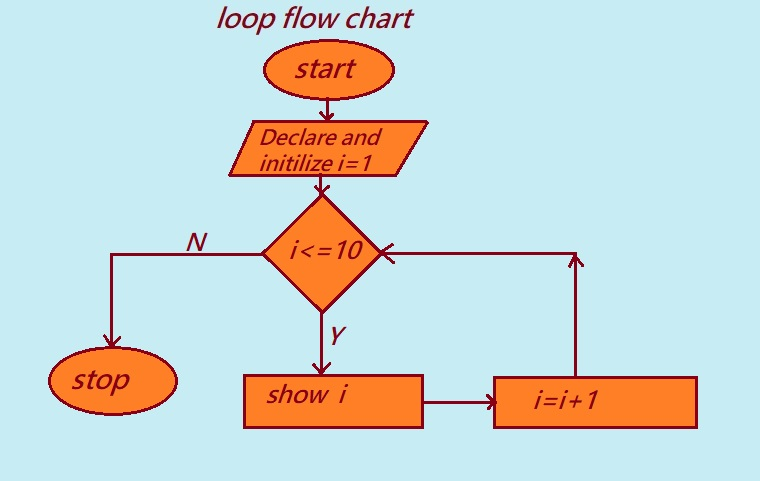

Loops:Looping statements in C programming are also known as iterative statements. They allow a programmer to execute statements or a group of statements multiple times until a specific condition becomes false.
When a programmer wants to execute a block of code repeatedly, they need to use looping statements in C programming. A loop executes the same code multiple times, which saves development time and makes the code more efficient.
In programming, we sometimes have to perform the same action or run a set of instructions over and over again. This mechanism is known as a loop.
Sometimes, a programmer may want to alter or exit a given loop prematurely. This is achieved using loop control statements. These statements help to change the execution flow of a loop from its original sequence.
Introduction to Loops in C Language
Advantage using looping in C programming
Here are some benefits of running loops in C programs:
i. Reduces the length of programs: A loop allows writing a block of code once and executing it many times, making the program considerably shorter.
ii. Provides better efficiency: Loops are very much time- and space-complexity wise beneficial to a program by preventing duplication of code and facilitating an efficient algorithm.
iii. Saves memory usage: Saves in memory through avoiding the writing of the same program over and over again, resulting in overall reduction of storage of your program.
iv. Reduces programmer's burden: Loops save the trouble of writing repetitive tasks for the programmer, which makes writing and maintaining codes easier.
v. Streamlined Control Flow: Loops provide a clear and structured way of controlling the execution within your program.
vi. Makes data traversal possible: It allows a programmer to iteratively go through each and manipulate the elements in an array or data structure.
vii. Eliminates code duplicity: This is one of the core advantages since, with loops, there is no need to constantly have the same lines of code.

The chart diagram explains how looping works in programming. The flowchart has been used to understand how loops operate.
The flowchart of the loop contains two main segments:
i. Control Statement: The conditions or criteria that the programmer would like to implement during the loop's execution.
ii. The Body: This segment contains the statements or instructions the programmer desires to repeat until a certain state is achieved.
Illustration of Number Series from 1-10 Using Loops
The flowchart represents generating a number series from 1, 2, 3...up to 10 using loops.
Explanation of the Flowchart:
Step 1: Start the program.
Step2: Declare and initialize i to 1.
Step 3: Test the condition i <= 10.
When i is 1, 1 <= 10 is true, so control moves to the 'show i' statement.
Upon executing that, it shows 1 in the screen.
Next, i = i + 1 is executed. That increments i by 1 making it equal to 2.
It again tests the condition i <= 10. (2 <= 10) is true so the control goes to the 'Show i' statement.
It shows 2 again. The next step i = i + 1 assigns a value `3' to i.
Once again i <= 10 is true.
This process repeats as long as the value of i is less than or equal to 10.
When i becomes 11, controlling the condition i <= 10 becomes false, and thus the loop breaks and control goes out of the loop.
Step 4: Stops the program execution.
Essential Features of Loops:
In the above flowchart, one time initialization and declaration of a loop will occur and will never occur for the next iterations.
If the termination logic of the loop (like i <= 10) never becomes false, the loop will continue to execute infinitely putting the program in an infinite loop.
Disadvantage of loops in Programming.
• If the loop's condition isn't well-defined, it might lead to unexpected results.
• If the condition is always true, the program will never exit the loop, running indefinitely (creating an infinite loop).
Previous Topic:-->> switch case statement in C || Next topic:-->>goto statement in C.
Other Topics
SQL Interview Questions Java Control Flow and Loops Interview Questions Top SQL Interview Questions Python Loops Interview Questions Banking Case Study in SQL